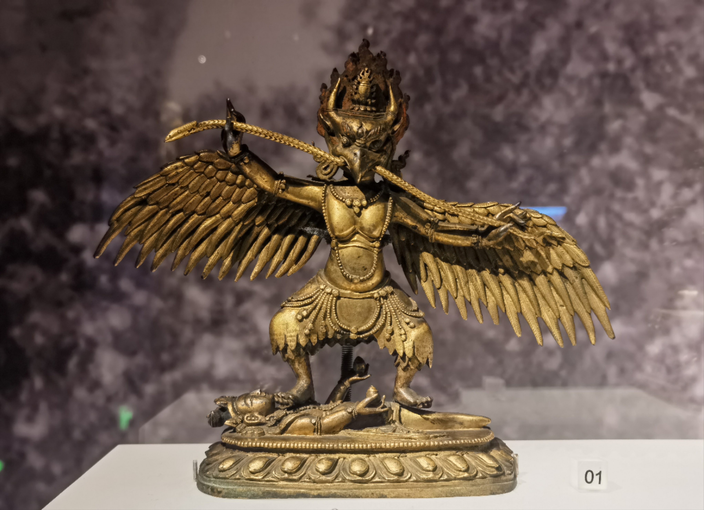

Sichuan University Museum
This blog echoes with the one written on Oct 10, 2023, which was about my visit to Chengdu Natural History Museum of Chengdu University of Technology. Finally I have a chance to visit Sichuan University Museum. It’s still free by appointment only now.
Unlike Chengdu Natural History Museum centering around ‚ÄúUnderstanding our Earth Home and Exploring the Mysteries of Nature‚Äù, Sichuan University Museum is a comprehensive museum that covers a wide range of exhibitions, each with unique characteristics. The basic display includes three sections: Archaeology, Folk Customs, and Ethnic Groups, complemented by special exhibitions on nature and art. Together, they present the theme of “Southwest Heaven and Earth, Gathering Clouds and Rivers.”
After nearly 4 years of closure, Sichuan University Museum welcomed the completion of its new building. The museum has been renovated and aims to create a magnificent place where humanities and nature, science and art blend together.
Compared to the exterior of the museum architecture, I prefer the interior design, which is different from that of the Chengdu Natural History Museum. However, both museums have a strong sense of modern architectural aesthetics.
The museum is divided into four floors above and one floor underground. During my visit, the above-ground floors feature the permanent exhibitions, while the underground floor houses the special exhibition about ancient books selected from the Sichuan University Collection.
Next are several essays about the collections that I found interesting.
First is the Qing Dynasty’s Roc Bird with golden wings. The Roc Bird is one of the protectors in Buddhism’s eight guardian deity, which is also known as the Garuda Bird. In Sanskrit, “Garuda” means the one with beautiful feathers. This statue features a bird’s head on a human body, with a sharp beak piercing a snake and feet stepping on a demon. With bent knees, its wings are spread like an eagle, ready to take flight.

I remembered that this golden statue was placed in a rather inconspicuous corner, but it immediately caught my attention upon the first sight. To my surprise and pleasure, however, when I later browsed the official website of the Museum, I discovered that its image occupies a very prominent position and could see it at every page.
The second collection is one of the “Treasures of the Museum”, known as the “Eastern Venus” - a Tang Dynasty statue of Guanyin with broken arms. I love the exquisite lighting in the museum. In the dim exhibition area, the statue of Guanyin is enveloped in a radiant glow. Combined with the pattern of three circular rings on the background wall, it exudes a sacred and solemn aura. The statue gazes downward in calm, creating a serene atmosphere.
Another one that impressed me is a couple of fan paintings that are complementary to each other. The first painting appears to be a plain and ordinary depiction of women. However, when you view it alongside the other painting, things become subtle. In each position correspond to every woman, there is a presence of a skeleton. If these two paintings are the front and back sides of the same fan, then I believe it represents the correspondence between life and death, as well as between the tangible and intangible.
There are also some lovely collections that can make laugh. On one display stand, there are many carved artworks, some in human form, some in animal form, and even some in combination. Among them, there is a tiny craft that I can’t tell what animal it is, but it has a bewildered expression.
There are many more treasures that can be told, but I won’t go into detail about them here. It’s best to leave them for you to explore and discover during your visitüòé.